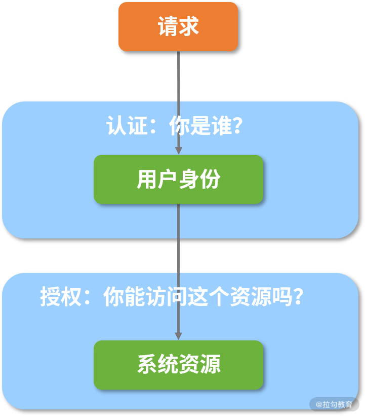
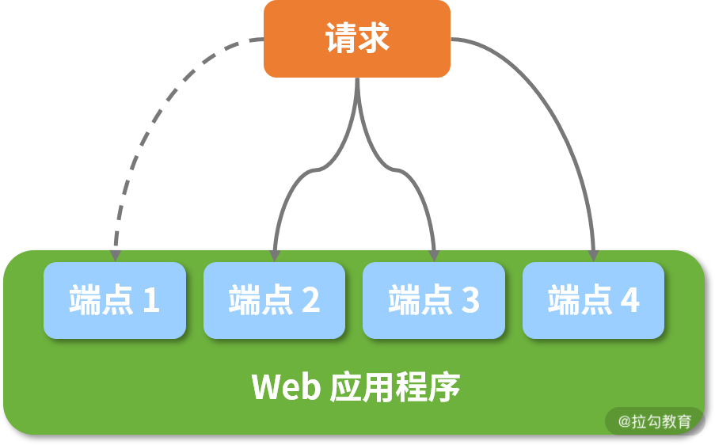
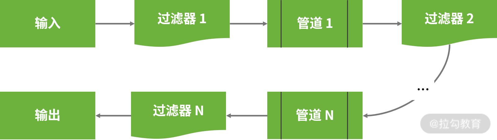
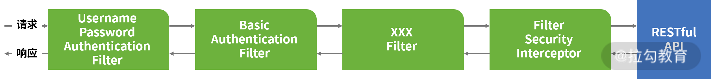

- 00 开篇词 从零开始：为什么要学习 Spring Boot？.md.html
- 01 家族生态：如何正确理解 Spring 家族的技术体系？.md.html
- 02 案例驱动：如何剖析一个 Spring Web 应用程序？.md.html
- 03 多维配置：如何使用 Spring Boot 中的配置体系？.md.html
- 04 定制配置：如何创建和管理自定义的配置信息？.md.html
- 05 自动配置：如何正确理解 Spring Boot 自动配置实现原理？.md.html
- 06 基础规范：如何理解 JDBC 关系型数据库访问规范？.md.html
- 07 数据访问：如何使用 JdbcTemplate 访问关系型数据库？.md.html
- 08 数据访问：如何剖析 JdbcTemplate 数据访问实现原理？.md.html
- 09 数据抽象：Spring Data 如何对数据访问过程进行统一抽象？.md.html
- 10 ORM 集成：如何使用 Spring Data JPA 访问关系型数据库？.md.html
- 11 服务发布：如何构建一个 RESTful 风格的 Web 服务？.md.html
- 12 服务调用：如何使用 RestTemplate 消费 RESTful 服务？.md.html
- 13 服务调用：如何正确理解 RestTemplate 远程调用实现原理？.md.html
- 14 消息驱动：如何使用 KafkaTemplate 集成 Kafka？.md.html
- 15 消息驱动：如何使用 JmsTemplate 集成 ActiveMQ？.md.html
- 16 消息驱动：如何使用 RabbitTemplate 集成 RabbitMQ？.md.html
- 17 安全架构：如何理解 Spring 安全体系的整体架构？.md.html
- 18 用户认证：如何基于 Spring Security 构建用户认证体系？.md.html
- 19 服务授权：如何基于 Spring Security 确保请求安全访问？.md.html
- 20 服务监控：如何使用 Actuator 组件实现系统监控？.md.html
- 21 指标定制：如何实现自定义度量指标和 Actuator 端点？.md.html
- 22 运行管理：如何使用 Admin Server 管理 Spring 应用程序？.md.html
- 23 数据测试：如何使用 Spring 测试数据访问层组件？.md.html
- 24 服务测试：如何使用 Spring 测试 Web 服务层组件？.md.html
- 结束语 以终为始：Spring Boot 总结和展望.md.html
- 捐赠
17 安全架构：如何理解 Spring 安全体系的整体架构？
在设计 Web 应用程序时，一方面，因为开发人员缺乏对 Web 安全访问机制的认识，所以系统安全性是一个重要但又容易被忽略的话题。另一方面，因为系统涉及的技术体系非常复杂，所以系统安全性又是一个非常综合的话题。因此，这一讲我们将讨论一个全新的话题—— Spring 中与安全性相关的需求和实现方案。
在 Spring 家族中，Spring Security 专门为开发人员提供了一个安全性开发框架，下面我们一起来看下Spring 中安全体系的整体架构。
Web 应用程序的安全性需求
在软件系统中，我们把需要访问的内容定义为一种资源（Resource），而安全性设计的核心目标是对这些资源进行保护，以此确保外部请求对它们的访问安全受控。
在一个 Web 应用程序中，我们把对外暴露的 RESTful 端点理解为资源，关于如何对 HTTP 端点这些资源进行安全性访问，业界存在一些常见的技术体系。
在讲解这些技术体系之前，我们先来看看安全领域中非常常见但又容易混淆的两个概念：认证（Authentication）和授权（Authorization）。
所谓认证，即首先需要明确“你是谁”这个问题，也就是说系统能针对每次访问请求判断出访问者是否具有合法的身份标识。
一旦明确了 “你是谁”，我们就能判断出“你能做什么”，这个步骤就是授权。一般来说，通用的授权模型都是基于权限管理体系，即对资源、权限、角色和用户的进行组合处理的一种方案。
当我们把认证与授权结合起来后，即先判断资源访问者的有效身份，然后确定其对这个资源进行访问的合法权限，整个过程就形成了对系统进行安全性管理的一种常见解决方案，如下图所示：

基于认证和授权机制的资源访问安全性示意图
上图就是一种通用方案，而在不同的应用场景及技术体系下，系统可以衍生出很多具体的实现策略，比如 Web 应用系统中的认证和授权模型虽然与上图类似，但是在具体设计和实现过程中有其特殊性。
在 Web 应用体系中，因为认证这部分的需求相对比较明确，所以我们需要构建一套完整的存储体系来保存和维护用户信息，并且确保这些用户信息在处理请求的过程中能够得到合理利用。
而授权的情况相对来说复杂些，比如对某个特定的 Web 应用程序而言，我们面临的第一个问题是如何判断一个 HTTP 请求具备访问自己的权限。解决完这个第一个问题后，就算这个请求具备访问该应用程序的权限，并不意味着它能够访问其所具有的所有 HTTP 端点，比如业务上的某些核心功能还是需要具备较高的权限才能访问，这就涉及我们需要解决的第二个问题——如何对访问的权限进行精细化管理？如下图所示：

Web 应用程序访问授权效果示意图
在上图中，假设该请求具备对 Web 应用程序的访问权限，但不具备访问应用程序中端点 1 的权限，如果想实现这种效果，一般我们的做法是引入角色体系：首先对不同的用户设置不同等级的角色（即角色等级不同对应的访问权限也不同），再把每个请求绑定到某个角色（即该请求具备了访问权限）。
接下来我们把认证和授权进行结合，梳理出了 Web 应用程序访问场景下的安全性实现方案，如下图所示：

认证和授权整合示意图
从上图我们可以看到，用户首先通过请求传递用户凭证完成用户认证，然后根据该用户信息中所具备的角色信息获取访问权限，最终完成对 HTTP 端点的访问授权。
对一个 Web 应用程序进行安全性设计时，我们首先需要考虑认证和授权，因为它们是核心考虑点。在技术实现场景中，只要涉及用户认证，势必会涉及用户密码等敏感信息的加密。针对用户密码的场景，我们主要使用单向散列加密算法对敏感信息进行加密。
关于单向散列加密算法，它常用于生成消息摘要（Message Digest），主要特点为单向不可逆和密文长度固定，同时具备“碰撞”少的优点，即明文的微小差异会导致生成的密文完全不同。其中，常见的单向散列加密实现算法为 MD5（Message Digest 5）和 SHA（Secure Hash Algorithm）。而在 JDK 自带的 MessageDigest 类中，因为它已经包含了这些算法的默认实现，所以我们直接调用方法即可。
在日常开发过程中，对于密码进行加密的典型操作时序图如下所示：

单向散列加密与加盐机制
上图中，我们引入了加盐（Salt）机制，进一步提升了加密数据的安全性。所谓加盐就是在初始化明文数据时，系统自动往明文中添加一些附加数据，然后再进行散列。
目前，单向散列加密及加盐思想已被广泛用于系统登录过程中的密码生成和校验过程中，比如接下来我们将要引入的 Spring Security 框架。
Spring Security 架构
Spring Security 是 Spring 家族中历史比较悠久的一个框架，在 Spring Boot 出现之前，Spring Security 已经发展了很多年，尽管 Spring Security 的功能非常丰富，相比 Apache Shiro 这种轻量级的安全框架，它的优势就不那么明显了，加之应用程序中集成和配置 Spring Security 框架的过程比较复杂，因此它的发展过程并不是那么顺利。
而正是随着 Spring Boot 的兴起，带动了 Spring Security 的发展。它专门针对 Spring Security 提供了一套完整的自动配置方案，使得开发人员可以零配置使用 Spring Security。
这一讲我们先不对如何使用 Spring Security 框架展开说明，而是先从高层次梳理该框架对前面提到的各项安全性需求提供的架构设计。
Spring Security 中的过滤器链
与业务中大多数处理 Web 请求的框架对比后，我们发现 Spring Security 中采用的是管道-过滤器（Pipe-Filter）架构模式，如下图所示：

管道-过滤器架构模式示意图
在上图中我们可以看到，处理业务逻辑的组件称为过滤器，而处理结果的相邻过滤器之间的连接件称为管道，它们构成了一组过滤器链，即 Spring Security 的核心。
项目一旦启动，过滤器链将会实现自动配置，如下图所示：

Spring Security 中的过滤器链
在上图中，我们看到了 BasicAuthenticationFilter、UsernamePasswordAuthenticationFilter 等几个常见的 Filter，这些类可以直接或间接实现 Servlet 类中的 Filter 接口，并完成某一项具体的认证机制。例如，上图中的 BasicAuthenticationFilter 用来认证用户的身份，而 UsernamePasswordAuthenticationFilter 用来检查输入的用户名和密码，并根据认证结果来判断是否将结果传递给下一个过滤器。
这里请注意，整个 Spring Security 过滤器链的末端是一个 FilterSecurityInterceptor，本质上它也是一个 Filter，但它与其他用于完成认证操作的 Filter 不同，因为它的核心功能是用来实现权限控制，即判定该请求是否能够访问目标 HTTP 端点。因为我们可以把 FilterSecurityInterceptor 对权限控制的粒度划分到方法级别，所以它能够满足前面提到的精细化访问控制。
通过上述分析，我们知道了在 Spring Security 中，认证和授权这两个安全性需求主要通过一系列的过滤器进行实现。
基于过滤器链，我们再来深入分析下 Spring Security 的核心类结构。
Spring Security 中的核心类
我们先以最基础的 UsernamePasswordAuthenticationFilter 为例，该类的定义及核心方法 attemptAuthentication 如下代码所示。
public class UsernamePasswordAuthenticationFilter extends
AbstractAuthenticationProcessingFilter {
public Authentication attemptAuthentication(HttpServletRequest request,
HttpServletResponse response) throws AuthenticationException {
if (postOnly && !request.getMethod().equals("POST")) {
throw new AuthenticationServiceException(
"Authentication method not supported: " + request.getMethod());
}
String username = obtainUsername(request);
String password = obtainPassword(request);
if (username == null) {
username = "";
}
if (password == null) {
password = "";
}
username = username.trim();
UsernamePasswordAuthenticationToken authRequest = new UsernamePasswordAuthenticationToken(
username, password);
// Allow subclasses to set the "details" property
setDetails(request, authRequest);
return this.getAuthenticationManager().authenticate(authRequest);
}
…
}
围绕上述方法，通过翻阅 Spring Security 源代码，我们引出了该框架中一系列核心类，并梳理了它们之间的交互结构，如下图所示：

Spring Security 核心类图
上图中的很多类，通过名称我们就能明白它的含义和作用。
以位于左下角的 SecurityContextHolder 为例，它是一个典型的 Holder 类，存储了应用的安全上下文对象 SecurityContext，包含系统请求中最近使用的认证信息。这里我们大胆猜想它的内部肯定使用了 ThreadLocal 来确保线程访问的安全性。
而正如 UsernamePasswordAuthenticationFilter 中的代码所示，一个 HTTP 请求到达系统后，将通过一系列的 Filter 完成用户认证，然后具体的工作交由 AuthenticationManager 完成，AuthenticationManager 成功验证后会返回填充好的 Authentication 实例。
AuthenticationManager 是一个接口，在其实现 ProviderManager 类时会进一步依赖 AuthenticationProvider 接口完成具体的认证工作。
而在 Spring Security 中存在一大批 AuthenticationProvider 接口的实现类，分别完成各种认证操作。在执行具体的认证工作时，Spring Security 势必会使用用户详细信息，上图位于右边的 UserDetailsService 服务就是用来对用户详细信息实现管理。
关于上图中的很多其他核心类，我们将在后续的 18 讲《用户认证：如何基于Spring Security 构建用户认证体系？》中持续深入展开。
小结与预告
这一讲我们开始探讨 Web 应用程序的安全性，在这个领域中，因为认证和授权仍然是最基本的安全性控制手段，因此我们系统分析了认证和授权的解决方案，并引入了 Spring 家族中的 Spring Security 框架实现这一解决方案，同时对 Spring Security 的基本架构做了分析。
介绍完认证和授权的基本概念之后，18 讲我们将基于 SpringCSS 案例系统详细介绍它们的实现过程，首先我们需要关注如何使用 Spring Security 框架完成对用户认证过程的管理。
© 2019 - 2023 Liangliang Lee. Powered by gin and hexo-theme-book.